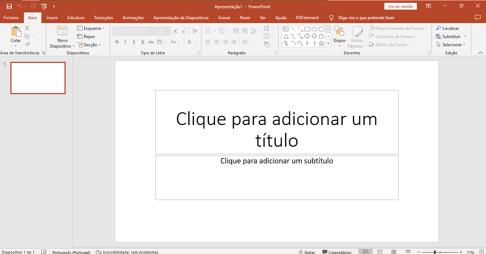

Criar e guardar uma apresentação em PowerPoint
Assista o Vídeo
Acessar o PowerPoint
Para acessar ao Microsoft PowerPoint, será necessário seguir os seguintes passos:
- Clique no botão Iniciar da barra de tarefas do Windows.
- Clique no ícone de PowerPoint. Se não aparecer, escreva a palavra "PowerPoint" no quadro de Procura ou Search, dependendo da lingua do seu sistema operativo.

Guardar Como
No canto superior esquerdo clique em Ficheiro e selecione a opção Guardar Como.
Será aberta a caixa de diálogo Guardar Como, de seguida digite o nome do arquivo por exemplo “Sessão 5” e por fim clique Guardar.
Assim, o documento estará guardado na pasta “Documentos” e o nome do ficheiro fica visualizado na barra de título da janela.
Após realizar qualquer alteração clique no botão Guardar. Feito isso, já pode fechar o documento.
Pratique!
Uma vez assistido o vídeo (repetidas vezes), realize os passos a seguir:
- Abra o Microsoft Office PowerPoint e grave a apresentação com seu nome e apelido.
- Na primeira caixa texto do slide principal insere o título: "A IMPORTÂNCIA DA INFORMÁTICA".
- Na segunda caixa de texto, insere como subtítulo: "Uso da informática na administração pública".
- Insira novo slide clicando no menu Base e de seguida clicar na opção "Novo diapositivo".
- Digite um título para o segundo slide, por exemplo: "Relevância da informática".
- Digite no segundo quadro de texto os ponto mais relevantes da informática, por exemplo:
|
7. Clica no menu Estrutura e escolha um dos temas apresentados na parte superior do slide.
8. Guarde a apresentação antes de fechar.